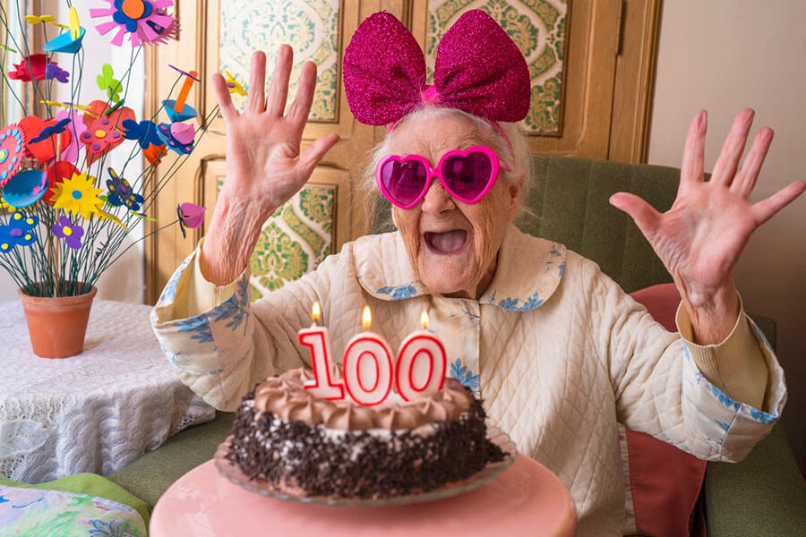
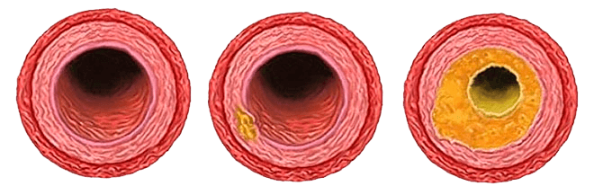
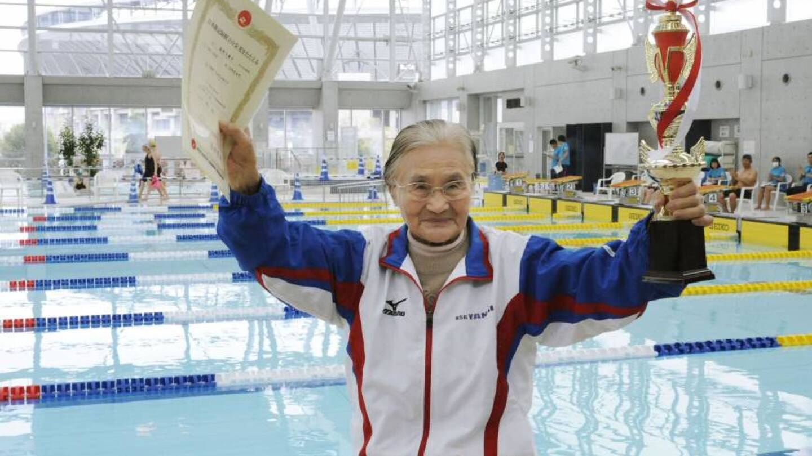
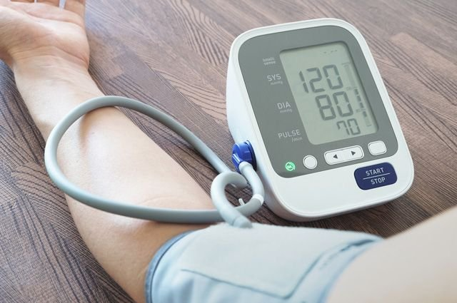
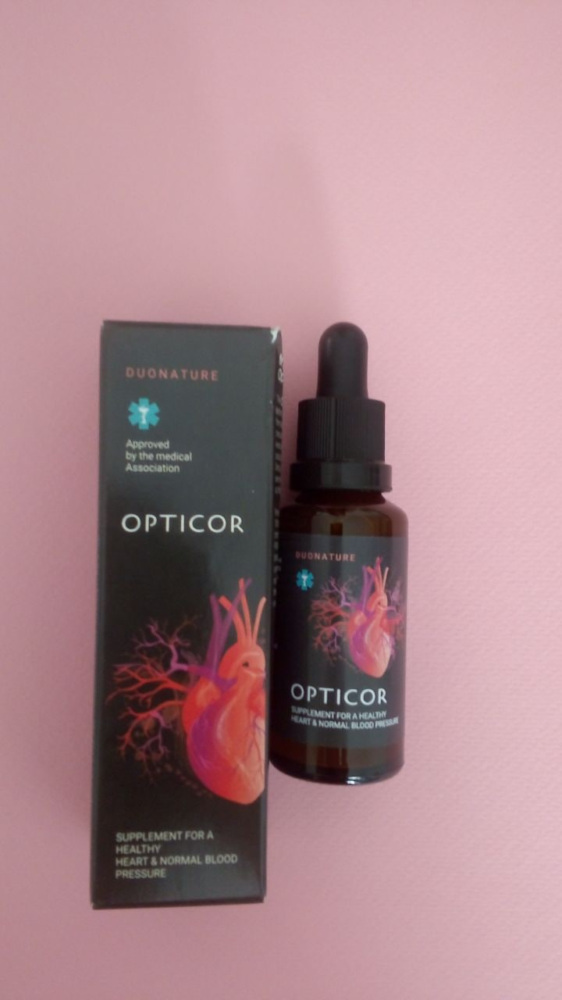

-
2022
- 4393
- 15
Известен български кардиолог Мария Илиева е абсолютно уверен в това, че всеки може сам вкъщи да си направи лечебно почистване на кръвоносните съдовете и до голяма степен да подобри здравето и състоянието си.
Такова почистване помага да се отървете от ударните скоковете на кръвното налягане и да се излекувате от 9 хронични болести на пенсионерите. Как да си направите лечебно почистване, лекарят разказа по-долу.
Също така в материала се разглеждат теми като:
- Да живееш до 100 години без хапчета е възможно!
- Защо заедно със замърсените кръвоносни съдове ръка за ръка вървят и хроничните неизлечими заболявания
- Скрити и явни признаци на замърсените кръвоносни съдове
- СЪВРЕМЕННИ МЕТОДИ ЗА ЛЕЧЕНИЕ НА ХИПЕРТОНИЯТА, СВЪРЗАНА С ВЪЗРАСТТА, БЕЗ ХАПЧЕТА
Мръсотията в кръвоносните съдовете е вашият страшен убиец!
Най-честата причина за смъртността в целия свят са СЪРДЕЧНО-СЪДОВИТЕ ЗАБОЛЯВАНИЯ. Основната причина за появата им с напредването на възрастта е ХОЛЕСТЕРОЛЪТ. Оказва се, че холестеролът е най-опасното вещество на планетата. Това вещество убива хората по-често, отколкото алкохола, никотина и наркотиците, взети заедно.
При 94% от случаите, когато човек не стига до 80-годишна възраст, той е убит от холестерола. Ако той не се натрупваше в кръвоносните съдовете, човек лесно можеше да живее до 100 години.

Кореспондент: Как изглежда холестеролът и какво представлява?
Д-р Илиева: Тук няма да описвам това вещество така, както е написано в медицинските учебници. Ще го опиша по-просто. Представете си студена мазнина, която е останала на тигана, който не бил измит след приготвянето на обяда. Така изглежда холестеролът.
Това вещество, намирайки се в кръвта, полепва по стените на кръвоносните съдове. Първо като тънък слой (в 20-25 годишна възраст), след това холестеролният слой расте бързо (25-40 годишна възраст), тъй като към лепкавия слой се залепват все повече частици. В РЕЗУЛТАТ НА ТОВА КЪМ 40-ГОДИШНА ВЪЗРАСТ ХОЛЕСТЕРОЛЪТ СТЕСНЯВА ОТВОРА В КРЪВОНОСНИТЕ СЪДОВЕТЕ ПОЧТИ НАПОЛОВИНА. В отговор на това сърцето няма друг избор, освен да увеличи кръвното налягане. Човекът получава скокове на кръвното налягане и възрастова хипертония с всички последствия.
Но дори и това не е толкова опасно! Много по-опасно е това, че холестеролът напълно запушва малките кръвоносни съдове, които минават през всички тъкани.
Като резултат на лошото кръвоснабдяването се появяват патологични процеси във вътрешните органи.
-
На техния фон, хроничните заболявания на човека се размножават. Първо, ще Ви заболи стомахът, след това далака, а след известно време ще се появят и стеноза на черния дроб и панкреаса. Обикновено в такива случаи се казва, че здравето на човек започва да се разпада. Холестеролът е това, което най-често стартира този процес.
-
Мръсотията в кръвоносните съдове води до бързо стареене. ХОЛЕСТЕРОЛЪТ ВКЛЮЧВА ЕДНА ВЕРИЖНА РЕАКЦИЯ НА СТАРЕЕНЕ В ОРГАНИЗМА. И именно замърсяването на кръвоносните съдовете, съкращава живота на човека в сравнение със срока, заложен от природата.
Вместо 100-годишен период (такъв ресурс е заложен в нашите органи), хората често не стигат и до 70!
Особено тези, които на 40-50 години се разболяват от хипертония, свързана с възрастта. Хипертония, между другото, е един от най-видимите симптоми на замърсяването на кръвоносните съдове.
Холестеролът е половината от бедата, но има още две вещества, които се натрупват в кръвоносните съдове!
-
Тромби. Ако холестеролът прилича на мазнини, то тромбите приличат на извара. На вътрешните стени на съдовете се образуват тромбови израстъци. Опасността от тромбите е дори по-голяма, отколкото от холестерола. ВЪВ ВСЕКИ ЕДИН МОМЕНТ ТРОМБЪТ МОЖЕ ДА СЕ ОТКЪСНЕ ОТ СТЕНАТА НА КРЪВОНОСНИЯ СЪД И ДА СТИГНЕ ДО СЪРЦЕТО, КОЕТО ЩЕ ДОВЕДЕ ДО ИНФАРКТ ИЛИ ДО МОЗЪКА, КОЕТО ЩЕ ПРИЧИНИ ИНСУЛТ. И двете заболявания са фатални с много висока вероятност от смърт или инвалидност.
Колкото по-възрастен става човек, толкова по-голям е рискът от откъсването на тромб. Ето защо възрастните хора толкова често умират от инсулт или инфаркт.
-
Калциеви кристали. Това са соли на тежки метали, живак, различни химикали, натрупани през живота им. Ако човек, например, е работил във вредно производство, то тогава той има повече такива натрупвания. Въпреки че, като се има предвид каква е екологията сега, калциеви израстъци се натрупват при всички. Тези вещества, както вече е доказано, ОБРАЗУВАТ РАК. Това означава, че те допринасят за анормалното клетъчно делене, което води до онкология.
При почти 98% от умрелите от рак откриват високи нива на кристални натрупвания в кръвта. Всички знаем, че живакът е вреден. А при голямо натрупване на калциеви кристали, самата кръв става опасна.
Проверете се! Колко замърсени са кръвоносните Ви съдове и дали при Вас има риск от ранна смърт!
Колкото по-силно са замърсени кръвоносните съдовете, толкова повече хронични заболявания се появяват, толкова по-бързо човек старее и толкова по-зле се чувства! Мога да Ви кажа веднага, ако никога не сте си почиствали кръвоносните съдове и сте на повече от 50 години, то кръвоносните Ви съдове са замърсени. Ако ги почистите, ПОЧТИ ВЕДНАГА ЩЕ СЕ ПОЧУВСТВАТЕ ПО-ДОБРЕ.

Към 50-годишна възраст кръвоносните съдове в цялото тяло се запушват.
Симптоми на замърсените кръвоносни съдове:
- Сутрешно отичане на крайниците
- Шум в ушите
- Мушици пред очите
- Болки в ставите
- Световъртеж
- Безсъние през нощта и сънливост през деня
- Чувство на постоянна умора
- Влошаване на зрението
- Лоша памет
- Разширени вени
- Задух
- Чести проблеми със стомашно-чревният тракт
- Проблеми с наднорменото тегло
Кореспондент: Искате да кажете, че почистването на кръвоносните съдове може да удължи живота на възрастните хора и да стабилизира кръвното налягане?
Д-р Илиева: Знам това. В клиниката сега изписваме почистване на кръвоносните съдовете на всички пациенти на възраст над 50 години (някои над 40 години). И след почистването наблюдаваме какво ще се случи. НАПРИМЕР ПРИ ОКОЛО 9 ОТ 10 ДУШИ КРЪВНОТО СТАВА НОРМАЛНО ВЕДНАГА СЛЕД ПОЧИСТВАНЕТО И НЯМА НУЖДА ОТ доживотно ЛЕЧЕНИЕ.
С други думи, много хора, които сега активно и ежедневно пият хапчета за стабилизиране на кръвното, могат да не правят това. Всичко, което трябва да направите, е да почистите кръвоносните си съдове. Дори ако хипертонията не изчезне напълно (и това също се случва), все пак здравословното Ви състояние ще стане много по-добро!
За съжаление, този прост метод за нормализиране на кръвното усърдно се крие от корумпирани лекари и фармацевтичните компании, на които им е изгодно, човек да се лекува продължително време и скъпо. В края на краищата, колкото по-дълго човек боледува, толкова повече ще похарчи за лекарства. На тях това им е изгодно. И почистването на кръвоносните съдове е лесно, евтино и бързо вдига човек на крака.
Метод за почистване на кръвоносните съдове за пенсионери и хипертоници
Към днешна дата в България има само едно средството, което се справя добре с тази задача. То се нарича Opticor.

След 3 месеца самата жена ни писа!
Бих искала да ви покажа едно писмо от Мартина Хенк, пенсионерка. Лекарите в местната клиника казаха, че не ѝ остава много време да чака. Но нейните роднини продължават да се борят за здравето ѝ. За съжаление жената не успя да ни посети лично. Дъщеря ѝ се обади в нашата клиника и помоли за помощ. Но аз не мога да поставя диагноза по този начин. Ние просто я посъветвахме да прочисти кръвоносните си съдове.
Най-важната съставка на комплекса «Opticor» са така наречените «МОЛЕКУЛИ НА АКТИВНИЯ КИСЛОРОД» - те са тези, които могат да «изядат» мръсотията, натрупана в кръвоносните съдове. Те разтварят и холестерола, и тромбите и калциевите кристали.
Да живееш до 100 години е нещо обикновено за японците. Ако по-рано японците почистваха кръвоносните си съдове с билки, гимнастика и йога, сега използват специални препарати на базата на «активния кислород»

Япония е рекордьор по средна продължителност на живота.
Как Opticor влияе на тялото като цяло?
-
Прочиства и закрепя кръвоносните съдове
Благодарение на «молекулите на активния кислород», Opticor ще разтвори холестеролните натрупвания, тромбите и калциевите израстъци. Освен това, благодарение на екстракта от хмел, средството повишава тонуса на кръвоносните съдове и им връща еластичността. След един месец на лечение, както показват данните от изследванията, кръвоносните съдове стават толкова чисти и еластични, като при млади хора на възраст 25-30 години. Възстановяват се малките капиляри. В резултат на това, кръвното на човек спира да скача, изчезват слабостта и сънливостта, подобрява се зарастването на рани и порязвания. Освен това се появява и повече сила. Ще имате много енергия, ще искате постоянно да вършите нещо вкъщи или на село.
-
Възстановява вътрешните органи и ставите
След почистването на кръвоносните съдове ще започне възстановяването на вътрешните органи. За щастие, природата е заложила в нас такова свойство, като регенерация на клетките. В резултат на това, минават много от заболяванията. Например, ако сте имали болки в панкреаса или далака, те ще спрат да Ви болят. Много често след почистване на кръвоносните съдове сязвите на стомаха и дванадесетопръстника се калцират. Освен това, ставите се възстановяват. Хрускането и прещракванията във врата, гърба и ставите, изчезват. Хрущялите оживяват. Лошото време вече не влияе на коленете и пръстите Ви. Връща се подвижността на ставите.
-
Ще стопи излишните мазнини
Наднорменото тегло е нещо, което прави състоянието на болния от хипертония и стария човек 4-5 пъти по-зле. Колкото по-голямо е теглото, толкова по-голямо е натоварването върху кръвоносните съдове, сърцето и ставите. Често, причината за наддаване на тегло е запушването на кръвоносните съдове, тъй като глюкозата не може да се отстранява от тъканите в нужното количество. След почистване на запушванията в кръвоносните съдове, теглото започва автоматично да се сваля. Средно за един месец след почистване на кръвоносните съдове човек губи 8-12 кг.
-
Ще възстанови зрението и паметта
Opticor съдържа цветове и листа на глог, който може да възстановява микро-съдовете на очното дъно, в резултат на което човек постепенно връща зрението си. Много хора отново започват да виждат отдалеч номерата на автобусите и отново могат да вкарат конец в ухото на игла. Наблюдава се пълно възстановяване на кръвоносните съдове в очите. Тези, които имат чисти кръвоносните съдове изобщо не ги заплашва слепота! Всички офталмолози знаят това.
Дефицит на Opticor в българските аптеки!
Кореспондент: Доколкото ни е известно, Opticor много трудно може да се купи от аптеките. Това средството много рядко го има. Това така ли е? И какъв съвет бихте дали на българските граждани?
Д-р Илиева: Да, това наистина е така. Opticor се произвежда в малки ограничени количества и затова просто не стига до аптеките. По-голямата част отива, за съжаление, за чужбина, останалата част се изкупува от частни клиники.
За обикновените хора наистина е много трудно да намерят Opticor. НО СЕГА МОЖЕТЕ ДА ПОРЪЧАТЕ ТЕЗИ КАПКИ ОНЛАЙН. Решихме да отделим част от капките, които сме закупили, за тази преференциална програма. Можете да участвате в официалната томбола и да получите капките Opticor безплатно. Отделените средства обаче не са толкова много, така че няма да стигнат за всички. Само тези, които първи участват в официалната томбола, ще могат да ги получат.
Условия за получаване на Opticor:
1. Трябва да се намирате на територията на Република България. Ние не изпращаме Opticor извън страната.
2. Закупуването на Opticor е разрешено САМО ЗА ЛИЧНА УПОТРЕБА. Много моля търговците да оставят средството на хората! Да печелите от старците е нечовешко!
3. Вземете участие в томболата и попълнете формуляра за поръчка. Можете да получите Opticor с доставка до дома в рамките на 1-3 дни, като плащането се извършва след получаване на пратката
Възползвайте се от този шанс, преди да са се възползвали други!
Както вече споменах, за съжаление нямаме това средството в достатъчни количества за всички хипертоници и възрастни хора в България. Затова решихме да го дадем на тези, които най-бързо се включат в официалната томбола. Ако искате да подобрите тялото си и да премахнете скоковете на кръвното налягане с помоща на дълбокото почистване на кръвоносните съдове, поръчайте средството колкото се може по-бързо – докато все още го има!
ПОЗНАЙТЕ ЗАД КОЯ ВРАТА Е ОТСТЪПКАТА ОТ 100%
Всичко, което трябва да направите, е да въведете вашето име и телефонен номер.
Побързайте! Имате още време:
10 :
00

Внимание! За да постигнете максимален ефект, ще трябва да преминете през пълен курс на продукта.
Коментари 15
Добави2022
2022
2022
2022
2022

2022
2022
2022
2022
2022
2022
2022
2022
2022
Водещи новини
Отново местят депутатите в бившия Партиен дом
2022
Средата ни продължава да създава насилници. Защо?
2022
Прокуратурата възложи проверка относно твърдения за упражнено насилие над жени в Стара Загора
2022
Садистът, нарязал 18-годишната Дебора, е извършил зверство и през г.
2022
Приятел на Георги: Малко ѝ е на тази Дебора, трябваше да ѝ отреже главата, ще я приключа!
2022
Водещите новини! 120 г. от Илинденско-преображенската епопея. Още свидетелства за жестокости спрямо жени в Ст. Загора (и още…)
2022
Куриоз: Деца избягаха от детска градина, персоналът дори не забелязал
2022
Напрежение в Полша: Два хеликоптера на Беларус нарушиха въздушното ѝ пространство
2022
Таксиджия върна на клиент забравена чанта с 40 000 евро
2022
2022
